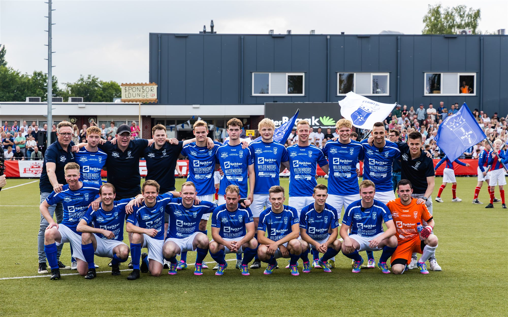
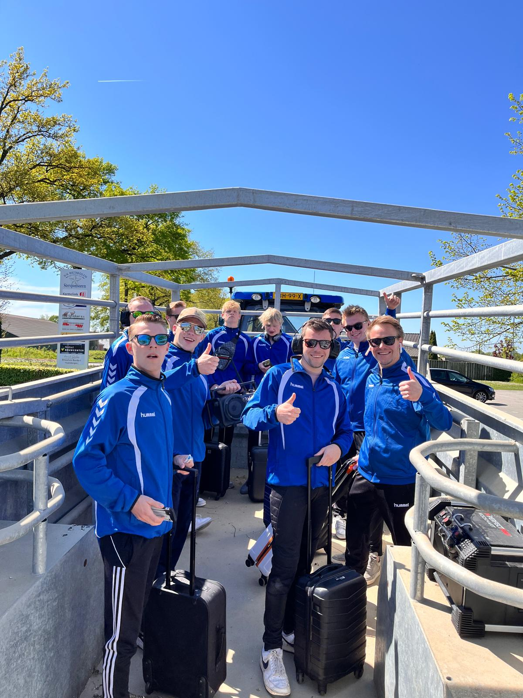
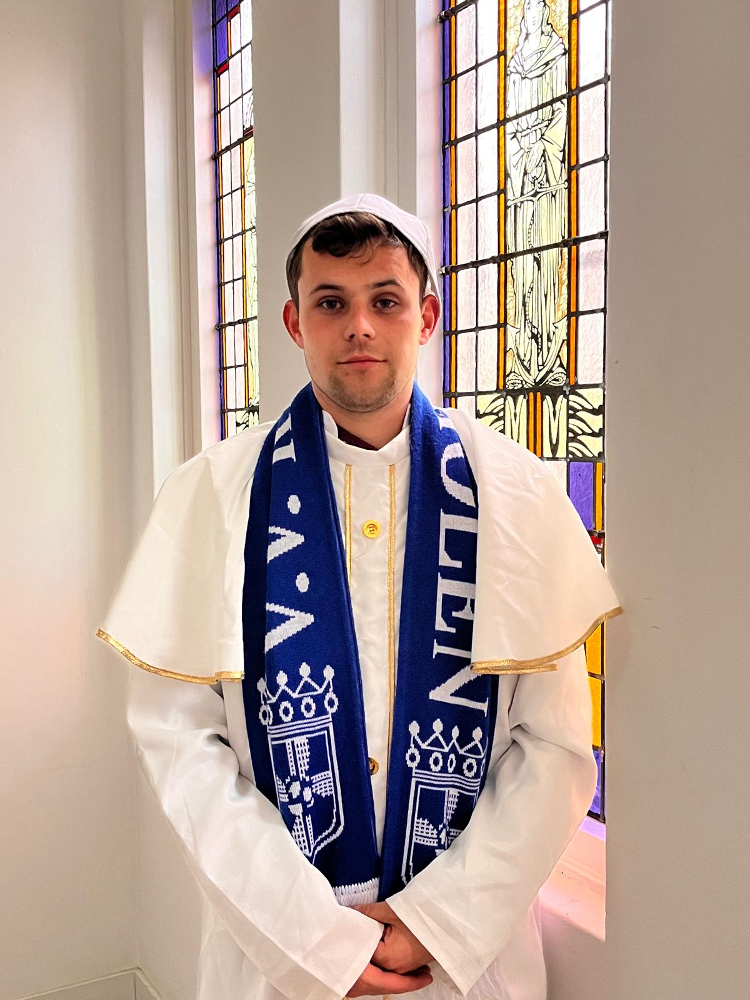
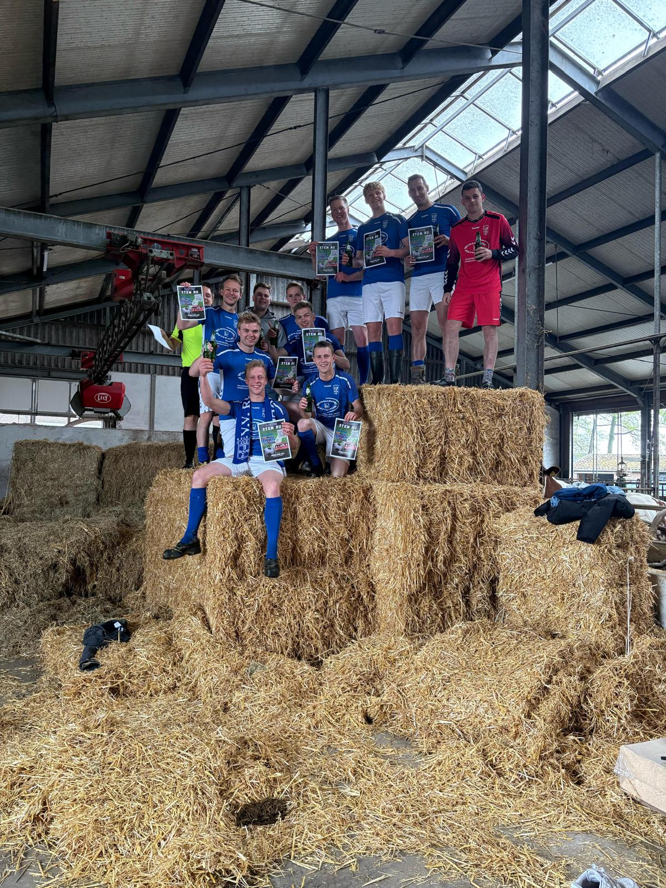
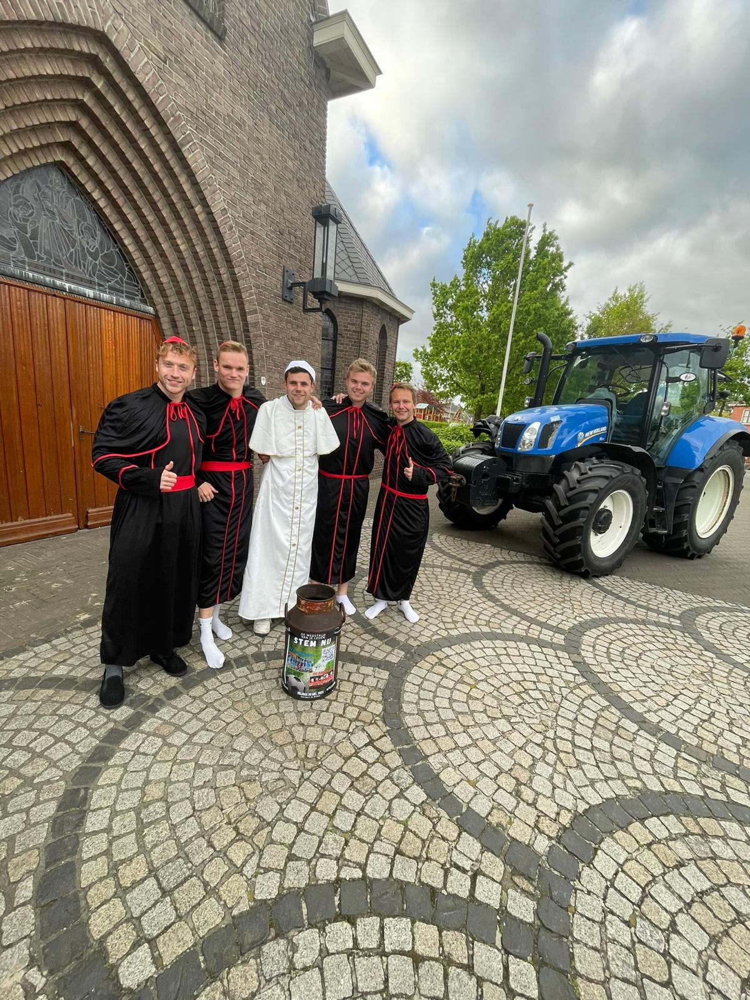
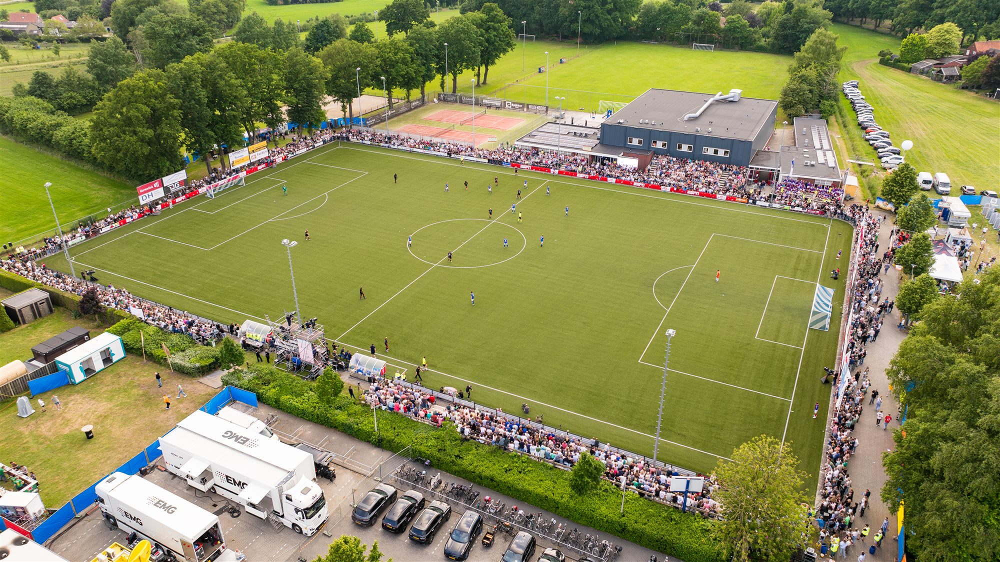
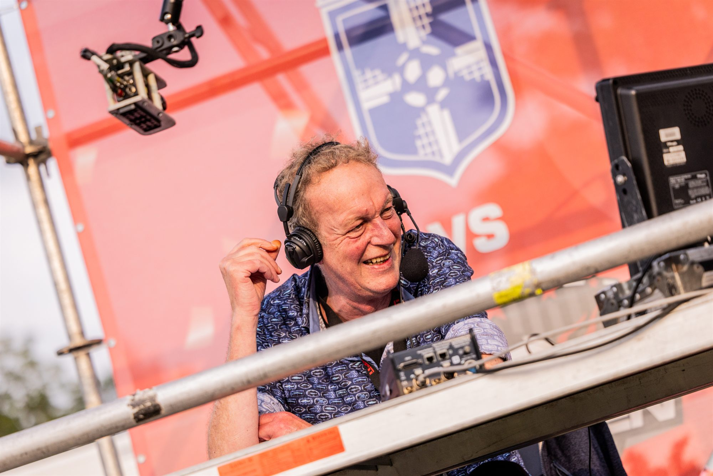
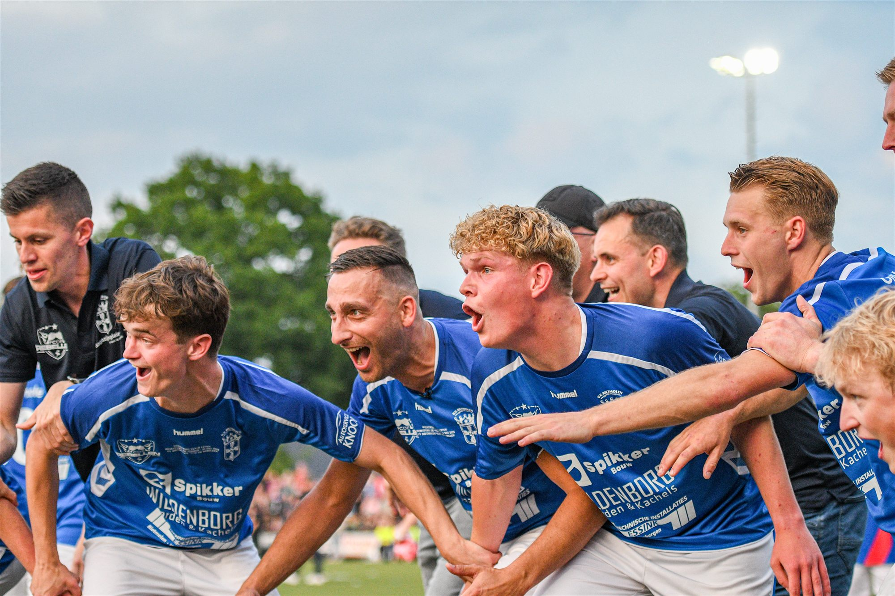
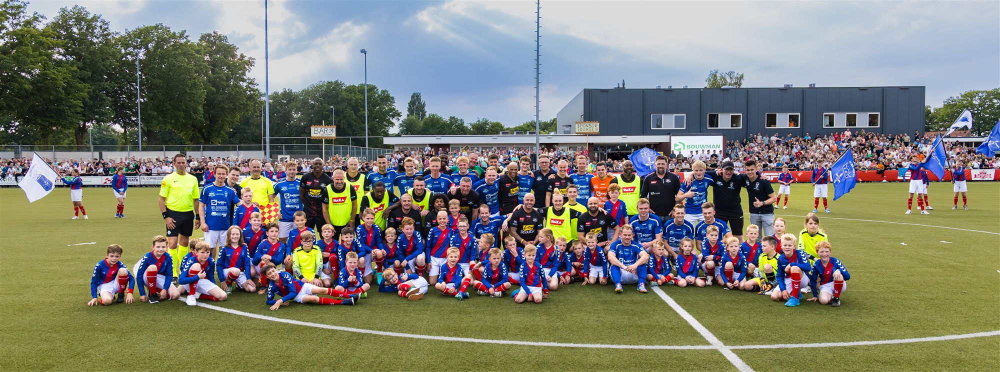

ESPN Wedstrijd van je Leven is een jaarlijkse competitie waarin amateurteams uit het hele land zich inschrijven voor een kans op een wedstrijd tegen oud-profs van FC de Rebellen. VV Rietmolen deed mee. Ik verzorgde alle content: video's, scripts, shotlists, montage en captions. Een ander plaatste dit op de accounts.
Hoe het begon
Het idee ontstond in de kantine: we willen meedoen aan Wedstrijd van je Leven. De eerste twee weken was het vooral voor de grap. Op 21 april namen we in de weide tussen de koeien een wat serieuzer "grappig filmpje" op, het moment waarop het begon uit te groeien tot iets groters.
Die eerste video was een video als boer. Dat sloeg zo goed aan dat we besloten om het thema door te trekken in meerdere video's, zodat het een soort serie werd en we herkenbaar bleven. Niet wat we eigenlijk zijn, maar een uitvergrote versie daarvan. In een competitie waar deelnemers uit het hele land komen, was het platteland onze kracht. Dat werd ons handelsmerk.

Sterke verhaallijn en timing
Naarmate we vorderden, merkten we dat dit serieuzer kon worden. We kregen momentum. We maakten gewoon waarvan we zelf dachten dat het leuk was. Al snel merkten we dat niet alleen ons dorp ermee bezig was: via via hoorden we dat mensen in andere plaatsen erover spraken, dat ze iets van Rietmolen hadden gezien, en daarom op ons stemden.
Het kantelmoment
Na de halve finale zaten we bij de laatste drie. In diezelfde week overleed Paus Franciscus, en zou kort daarna het conclaaf plaatsvinden om een nieuwe paus te kiezen.
We zagen het moment en grepen het aan. We speelden ons eigen conclaaf na, een video waarin wij de keuze moesten maken. De reactie op het conceptidee was meteen positief, dus we bestelden direct carnavalskleding en namen het op. Deze video liep het best van de hele campagne, en haalde zelfs de pagina's van de Tubantia.
Voorbeelden uit de campagne




Van Rietmolen naar het hele land
We bereikten ruim 1 miljoen weergaven op Facebook en evenveel op Instagram, allemaal organisch en zonder budget. Daarnaast zetten we het record voor het meeste aantal stemmen dat ooit op een team is uitgebracht bij Wedstrijd van je Leven.


Van campagne tot evenement
Van de eerste video tot de finale zat ongeveer een maand, van 10 april tot 10 mei. In de laatste 20 dagen hebben we alles rond de wedstrijddag zelf geregeld: van een tribune langs het veld op ons eigen sportpark, tot de tapwagen voor het bier en eigen matchday sjaals.
We speelden de wedstrijd tegen FC de Rebellen, live uitgezonden op ESPN 1, met ruim 3.700 bezoekers op ons eigen sportpark.


Reflectie
Dit project leerde me dat ik ervan hou om creatief bezig te zijn. Gewoon losgaan met een helder doel, in dit geval: zoveel mogelijk stemmen krijgen en mensen in het dorp en daarbuiten meenemen in het verhaal.
De combinatie van timing, moment-opportunisme en een duidelijk thema, dat is waar ik echt energie van krijg. Niet gepland, maar wel gericht.